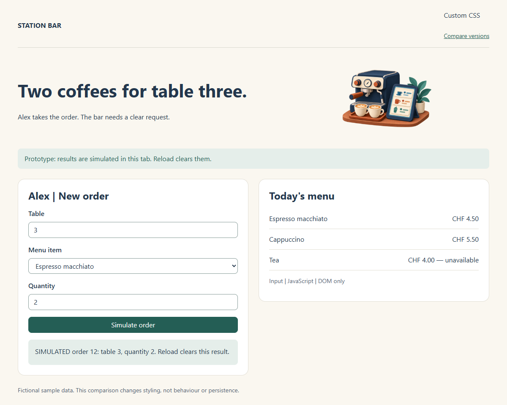
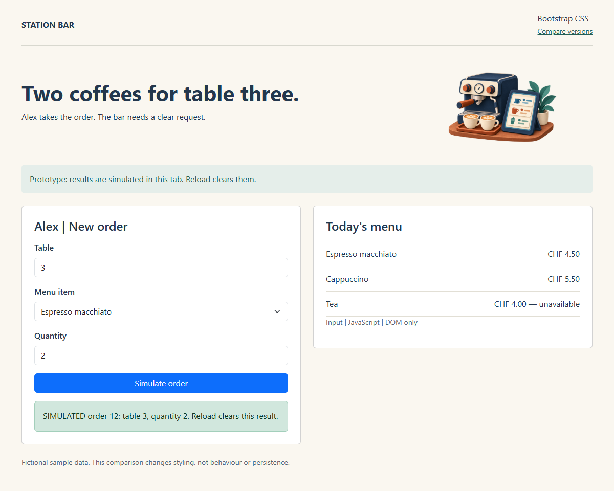

Without Bootstrap
Our CSS defines the grid, fields and button.


STATION BAR · PREPARED EXAMPLES
Same fields, menu and JavaScript. Compare who supplies the layout and control styles.
Our CSS defines the grid, fields and button.

Bootstrap classes supply the grid, fields and button.

Both pages are static prototypes. A styled confirmation does not mean an order was saved. No backend or account is needed.
Locally: extract the entire ZIP and open this index.html. All required files are included; internet access is unnecessary.
From the Station Bar repository root in Codespaces:
python -m http.server 8090 --bind 0.0.0.0 --directory extensions/frontend/style-comparison
Open private port8090 from the Ports tab. Stop with Ctrl+C. No extra Python packages are required.
Source-file and walkthrough guide · Sources · Bootstrap licence